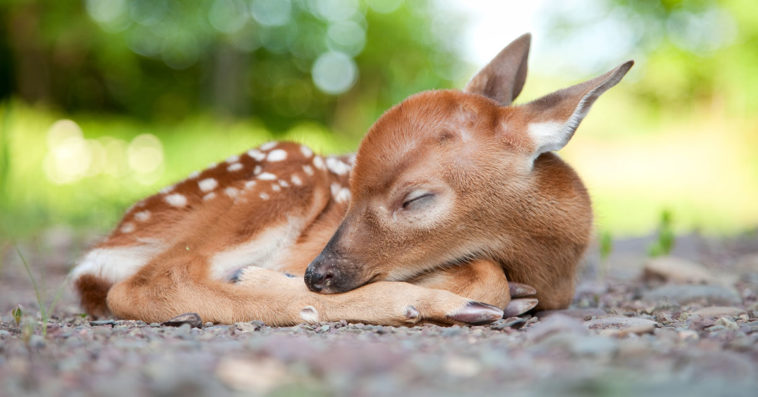

Mammals

Mammals are among the most adaptable animals on the planet.
They are found on every continent and in every ocean, and range in size from tiny bumblebee bats to enormous blue whales. One reason for their success is the way they move. Mammals as a group use every possible form of locomotion. Terrestrial species walk, run, jump, climb, hop, swing, dig, and burrow. Aquatic ones swim, shuffle, and dive. A few even fly.
Diet and behavior vary, too. Many carnivores, for example, are top predators that live generally solitary lives. These include jaguars, tigers, and polar bears. By contrast, lions, otters, wolves, and dolphins live in family groups. Even more social are some of the herbivores, especially hoofed animals like deer and zebra. By living in large groups, they gain both protection against becoming another animal’s meal and more opportunities to breed. Among omnivores, primates are known for their high intelligence, and rodents for their high numbers.
Mammal bones, especially skulls, are used for identification, and to work out the evolutionary history of each species. The jaws of a house cat are more lion- than wolf-like, for example. The teeth of horses and zebras look alike. The ear bones of mammals were once the jaws of prehistoric reptiles. And so on.
Despite these differences, all mammals share four traits that are shown in the diagram below: hair, mammary glands, a hinged jaw, and three tiny middle ear bones. Most have specialized teeth and moveable external ears.

Mammals
- American bison
- Black bear
- Bighorn sheep
- Bobcat
- Canadian lynx
- Caribou
- Cougar
- Coyote
- Elk
- Grizzly bear
- Jaguar
- Moose
- Mountain goat
- Mule deer
- Pronghorn
- Red fox
- Snow leopard
- Swift fox
- White-tailed deer
- Wolf